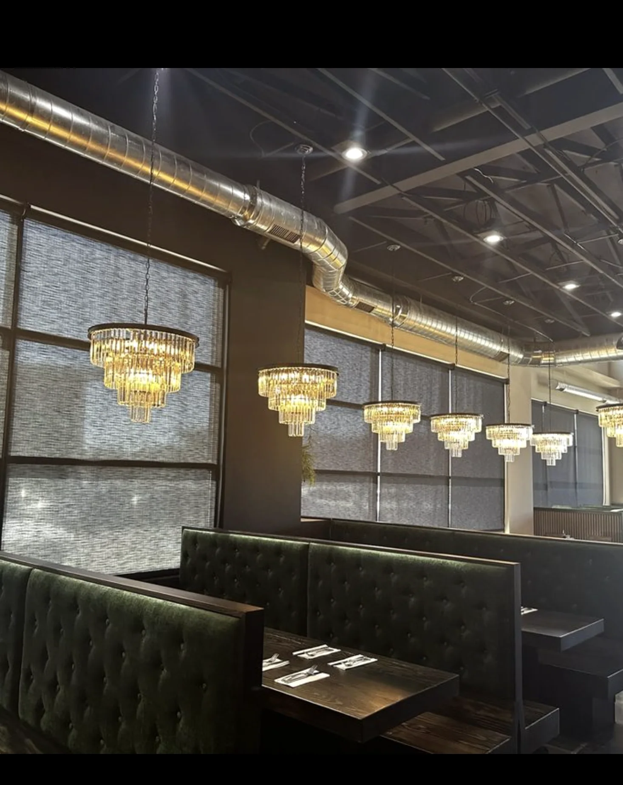
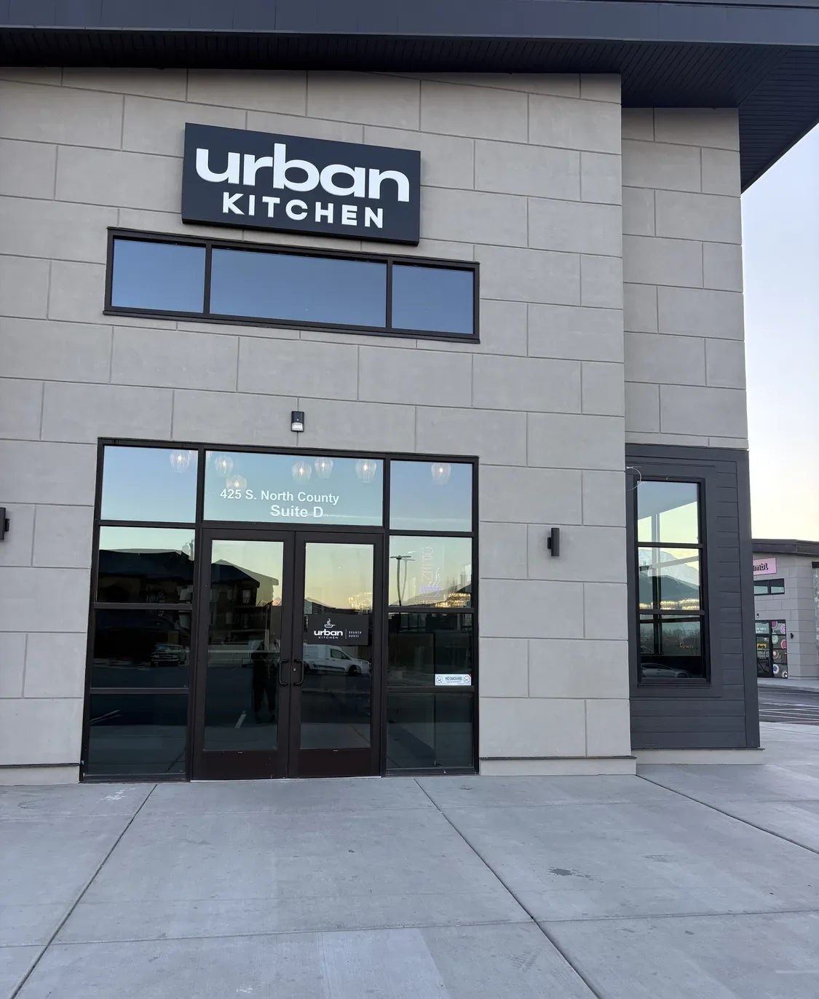
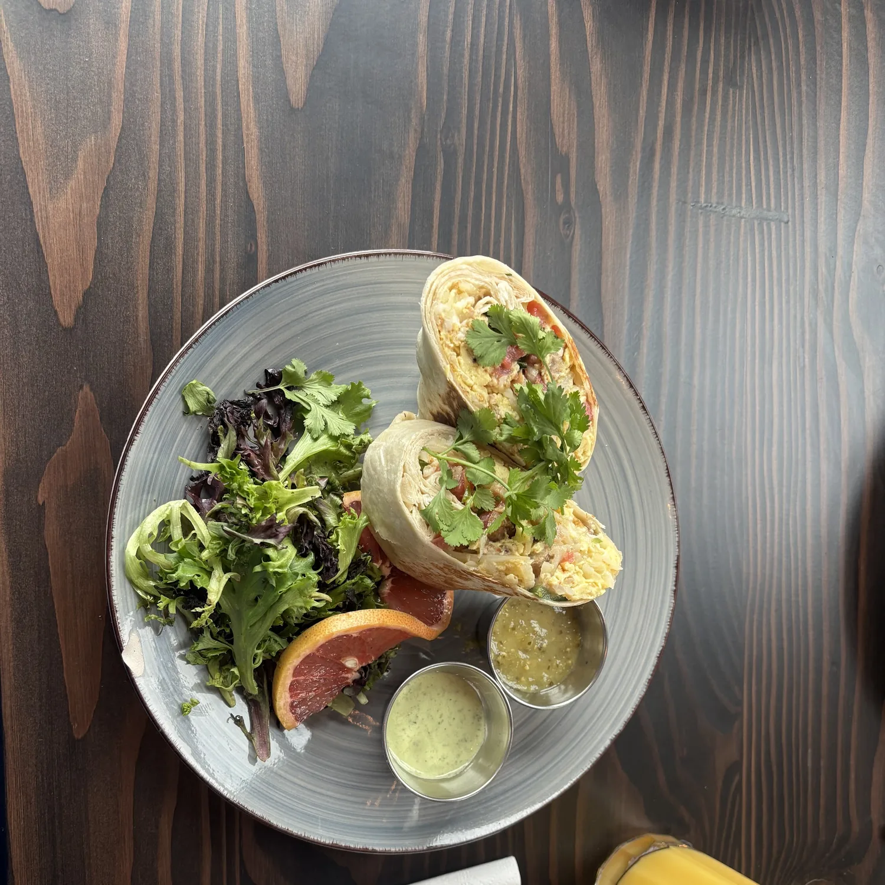
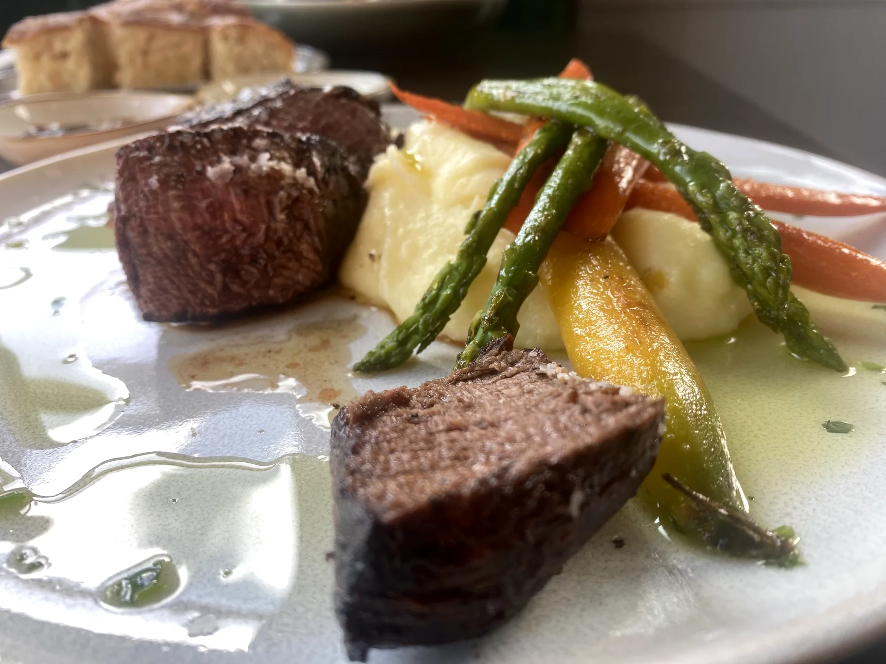
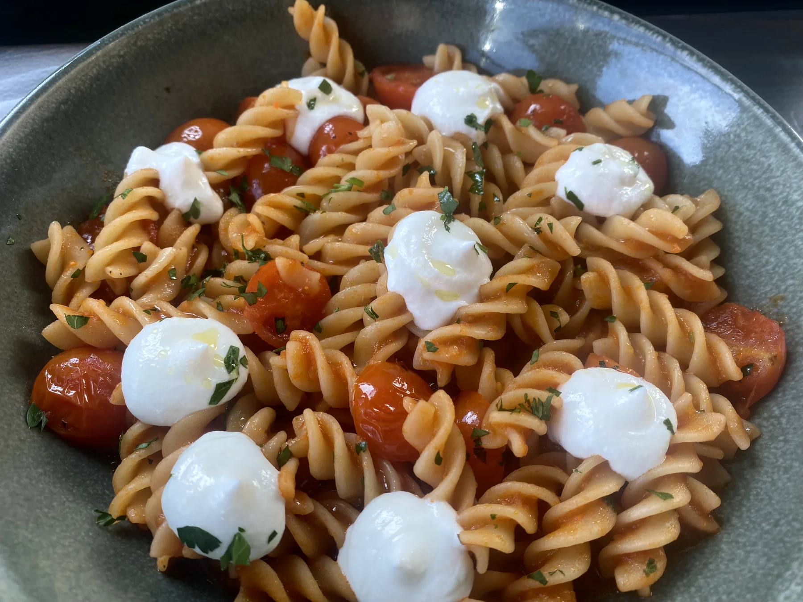
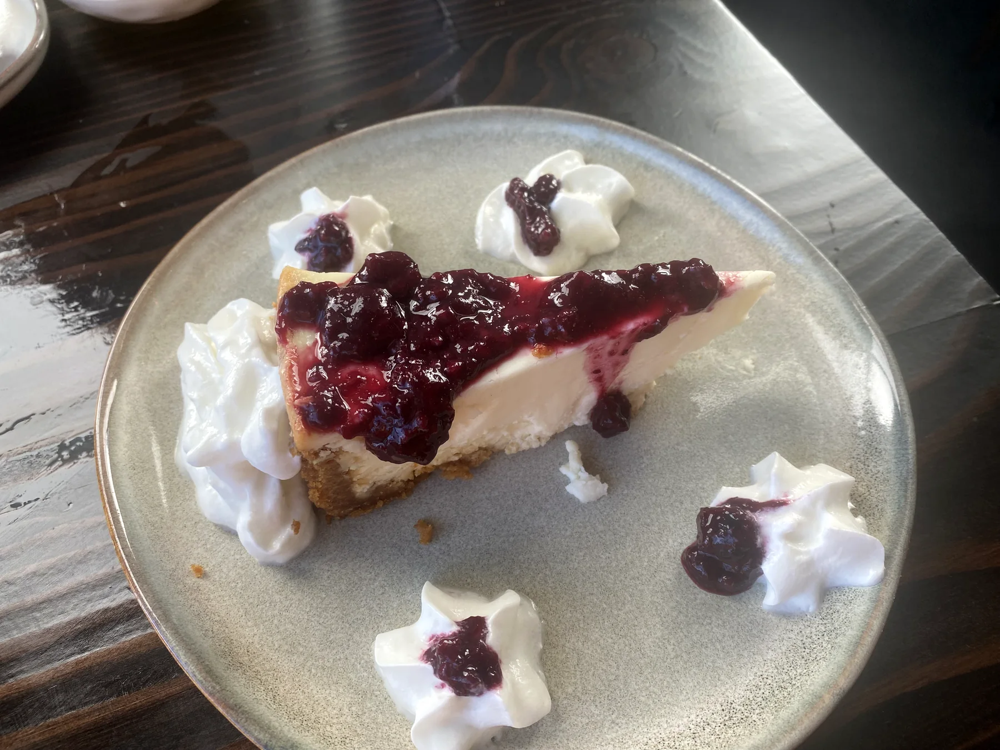
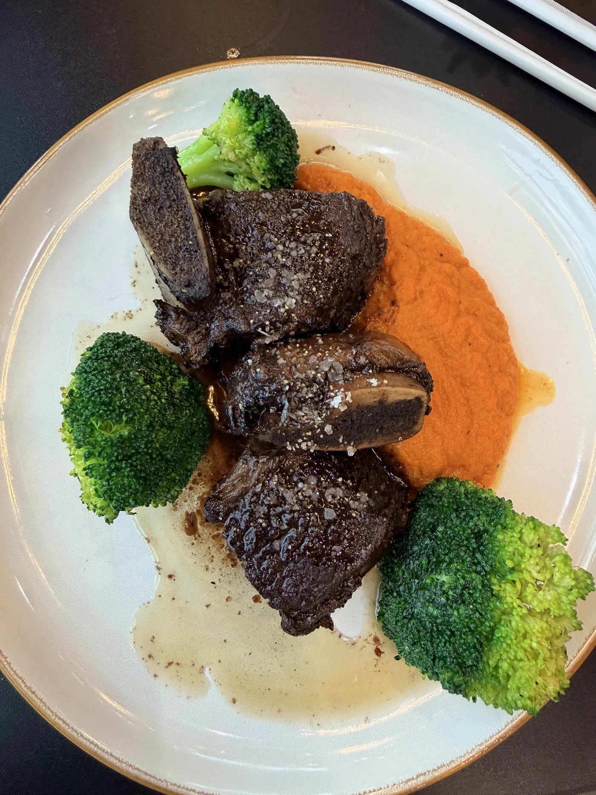
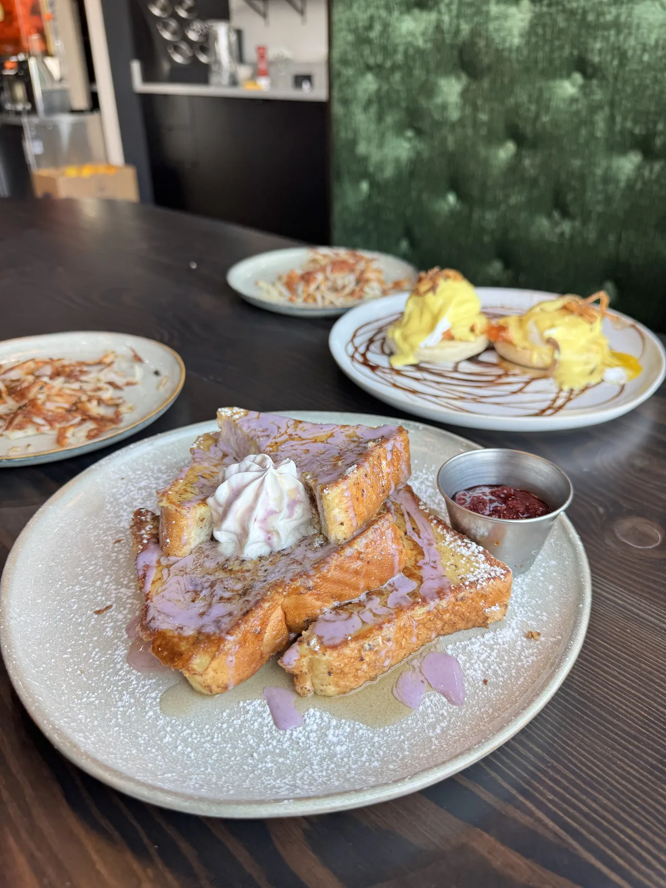

Berry Mascarpone French Toast
Thick-cut brioche filled with vanilla mascarpone cream and seasonal berry compote, with powdered sugar and maple syrup.
$16Pleasant Grove · Utah
Daily brunch from 8:00 AM, with fresh breakfast and lunch plates, plus steaks, chicken, seafood, and pasta for dinner every night.

Our Story
Urban Kitchen starts with brunch and keeps going into dinner. Come in for French toast, benedicts, and lunch favorites during the day. At night, the menu shifts to steak, chicken, seafood, and pasta.
The same velvet booths and crystal chandeliers work beautifully for business meetings, family gatherings, birthday dinners, baby showers, and wedding celebrations, whether you stop in for coffee or stay for dinner.
Gallery
A look inside the dining room and a taste of what's coming out of the kitchen.







Follow Along
Google Reviews
Read recent feedback from guests and share your own visit after brunch.
Open our Google profile for the latest guest reviews.
Open our Google profile to read the latest reviews or share your visit.
View Google ReviewsVisit Us
425 S. North County, Suite D
Pleasant Grove, UT
Brunch Mon-Fri 8:00 AM-2:00 PM
Brunch Sat-Sun 8:00 AM-3:00 PM
Dinner nightly 5:00 PM-9:00 PM